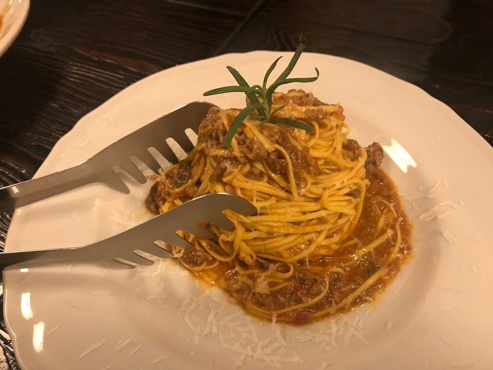
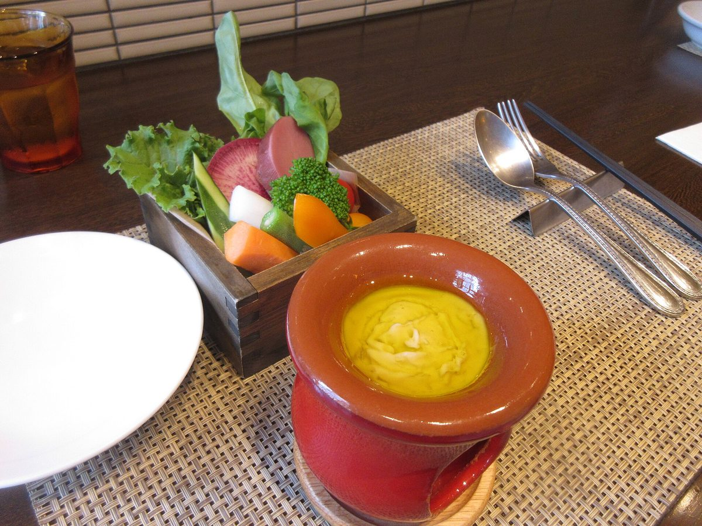

Langhe, Piamonte
Fotografía de Zairon. Licencia CC BY-SA 4.0. Fuente: Wikimedia Commons.
Transparencia
Este sitio se construyó con documentos públicos, memoria de las familias y material de archivo. Acá están las fuentes, las licencias y las personas que hicieron posible cada pieza.
01 · Imágenes
Las imágenes de archivo pertenecen a sus autores y se utilizan con licencias libres. Las fotografías ilustrativas serán reemplazadas por imágenes propias de la asociación a medida que estén disponibles.
Fotografía de Zairon. Licencia CC BY-SA 4.0. Fuente: Wikimedia Commons.

Fotografía de Leandro Kibisz. Licencia CC BY-SA 4.0. Fuente: Wikimedia Commons.

Archivo Touring Club Italiano. Licencia CC BY-SA 4.0. Fuente: Wikimedia Commons.

Fotografía de Aguzanotti. Licencia CC BY-SA 4.0. Ver archivo original.

Imagen de archivo. Licencia CC BY-SA 3.0. Fuente: Wikimedia Commons.

Fotografía de Brother Hotel. Licencia CC BY-SA 3.0. Fuente: Wikimedia Commons.

Fotografía de Christian Franzen. Dominio público. Ver archivo original.

Imagen de referencia gastronómica. Licencia CC BY 2.0. Fuente: Wikimedia Commons / Flickr.

Imagen de referencia gastronómica. Licencia CC0. Fuente: Wikimedia Commons.

Imagen de referencia gastronómica. Licencia CC BY-SA 4.0. Fuente: Wikimedia Commons.
02 · Herramientas
El sitio funciona sin gestor de contenidos ni dependencias de desarrollo. Se edita directamente en los archivos y se publica como sitio estático.
Tipografía de Christian Thalmann. Licencia SIL Open Font License 1.1. Ver en Google Fonts.
Tipografía de Rasmus Andersson. Licencia SIL Open Font License 1.1. Ver en Google Fonts.
Diseño y desarrollo original para la Asociación Civil Familia Piamontesa de Villa María. El emblema es una pieza vectorial creada para este sitio. HTML, CSS y JavaScript sin frameworks.
03 · Fuentes documentales
Los datos institucionales y las fechas de la historia se apoyan en notas periodísticas, documentos municipales y publicaciones de la Federación de Asociaciones Piamontesas de Argentina. Las fuentes pueden ampliarse y corregirse con nuevos aportes.
assets/js/datos.js y en el pie de página.